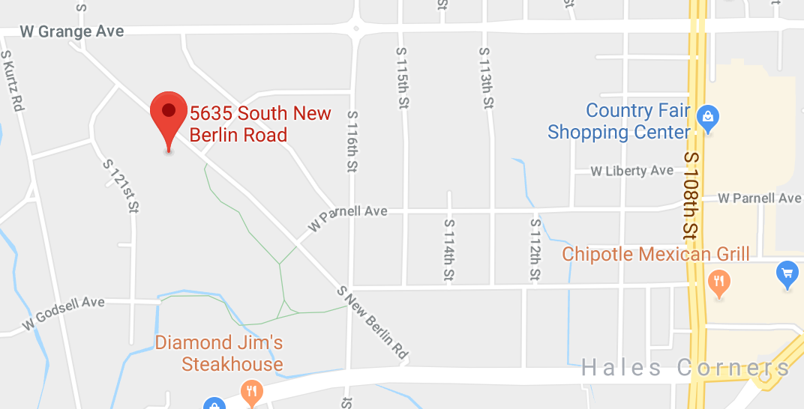

Details of the Southwest Chess Club
|
The Southwest Chess Club meets every Thursday night at the Hales Corners Village Hall /Police Station 5635 South New Berlin Road, Hales Corners, Wisconsin in the downstairs Community Room. The club opens at 6 PM and Tournament Games begin at 7 PM. We have a Blog that shows current club news and you are invited to contribute information, games, and any items of interest. You can subscribe to the blog and receive email notification of new events or announcements! Schedule of our ongoing and upcoming events. The US Chess Federation provides results of our completed events online. The crosstables contain complete pre- and post-ratings of all participants. Aethelred Templin is the reigning 2024 Joe Crothers Memorial Southwest Chess Club Champion. Our club sponsors two weekend tournaments each year April 26, 2025, and October 04, 2025 — mark your calendars! |
 Click on the above image to open in Google Maps.
|
Join us to play rated tournament games, blitz, or some skittles. There is always a game to be had! We have players of all ratings and experience levels who are always willing to help you improve your game. In the summer, we have a full schedule of lectures right before the games begin.
Our club maintains a large library of Chess Books and Chess DVDs (click on each link for a full list). Club members can check out these titles for 3 weeks at a time. For books and DVD checkouts see Chris Wainscott. After you have filled out this form, Chris will bring in your book or DVD the following week.
Sound like fun? Stop by anytime and meet the friendly people of the Southwest Chess Club. For more information, contact any of the tournament Directors by phone or email:
| Robin Grochowski | (414) 744-4872 |
| Chris Wainscott | (414) 839-5232 |
| Allen Becker | (414) 807-0269 |
| John DeMastri | (312) 952-6495 |
Website: Allen Becker and Mike La Budde (updated May 04, 2025)